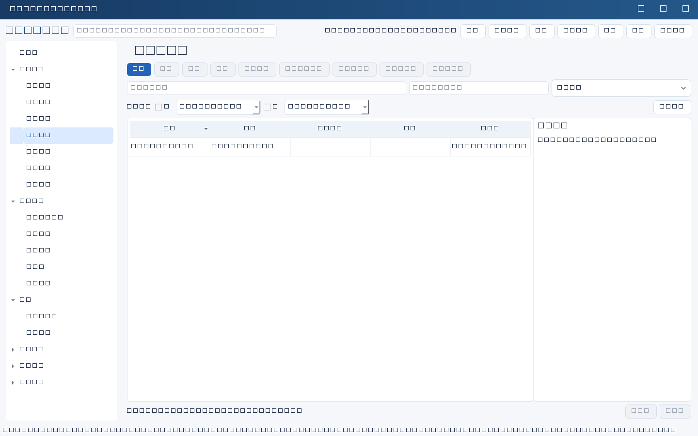
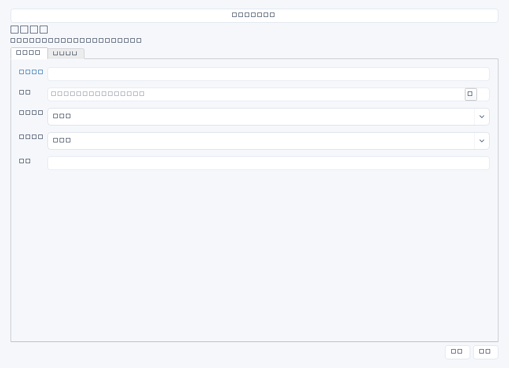

留下每日工作、现场处置、协调沟通和验证结果的事实记录，为任务推进、项目复盘和绩效提供可追溯依据。工作记录与数据库保存审计是不同层次。


操作步骤与资料获取
- 从当天工单、监控截图、会议纪要和实施记录整理事实，先区分计划做什么与已经做了什么。
- 新增记录，填写日期、人员并关联对应任务、项目或系统；人员ID和关联ID需选择实际已有记录。
- 工作内容写具体动作和范围，结果写输出、异常或未达成项；在证据中登记原件位置、版本和采集时间。
- 填写下一步和需协调事项，必要时另建任务跟踪；保存工作记录本身不会自动创建任务。
字段逐项说明
| 操作 / 字段 | 详细说明 |
|---|---|
| 名称 | 记录标题，强制非空；建议日期＋工作主题，便于检索。 |
| 日期 | 工作发生日期而非必须等于录入日；可空，非空时强制YYYY-MM-DD。 |
| 人员ID | 工作执行人对应人员记录；非空时强制引用存在且未归档的people记录。 |
| 关联ID | 对应任务、项目、系统等任一业务记录；非空时强制引用存在且未归档的记录，不能填外部工单编号代替。 |
| 工作内容 | 描述采取的操作、协调对象、涉及设备或系统范围；建议包括执行时间段。 |
| 结果 | 记录实测结果和遗留问题，例如校验成功、发现备份延迟或待业务确认；避免只写“正常”。 |
| 证据 | 记录工单号、截图/报告位置、采集日期和确认人；外部编号放此处，不代替关联ID。 |
| 下一步 | 明确下一动作及时间；如需长期跟踪建议建立任务并在文字中注明其来源。 |


示例（仅演示）
| 操作 / 字段 | 详细说明 |
|---|---|
| 名称 | 2026-04-12 ERP隔离恢复验证 |
| 日期 | 2026-04-12 |
| 人员ID | |
| 关联ID | |
| 工作内容 | 09:00—11:30将离线备份恢复至隔离环境，检查数据库完整性 |
| 结果 | 恢复成功，20笔业务单据待财务确认 |
| 证据 | DR-20260412报告及控制台截图，受控资料库/连续性/20260412 |
| 下一步 | 4月15日前请王芳核对样本并留存签认 |
形成闭环
- 检查记录能否回答谁、何时、对什么对象、做了什么、结果如何。
- 对照证据原件核实结论，下一步已转任务时保留任务来源说明，未完成事项不要写成完成。
- 示例关系为空；实际使用时从界面选择记录，勿照抄虚构ID。
常见误区与边界
- 用大量“处理日常工作”堆砌记录，缺少对象与产出。
- 以为保存记录会上传截图，或会自动改变关联任务状态。
- 把包含生产口令、客户数据的原始日志直接粘贴进正文；应脱敏并控制原件访问。